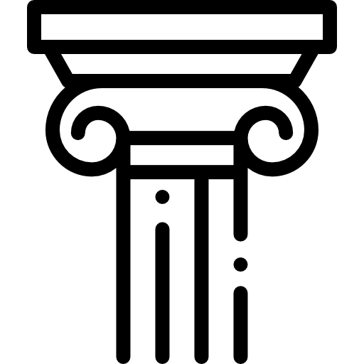
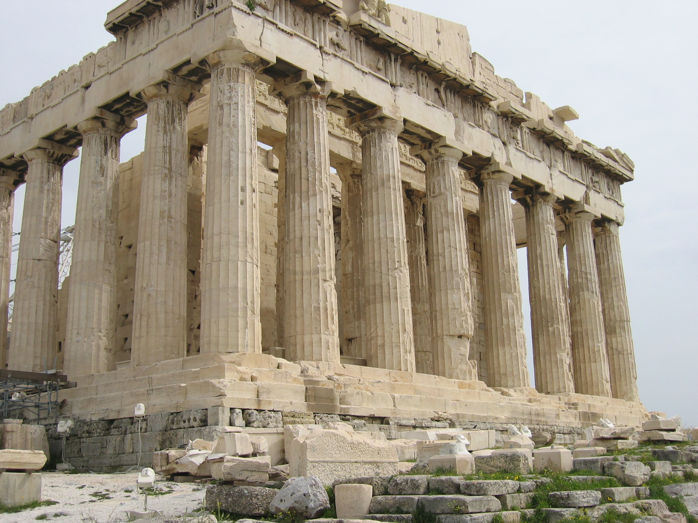
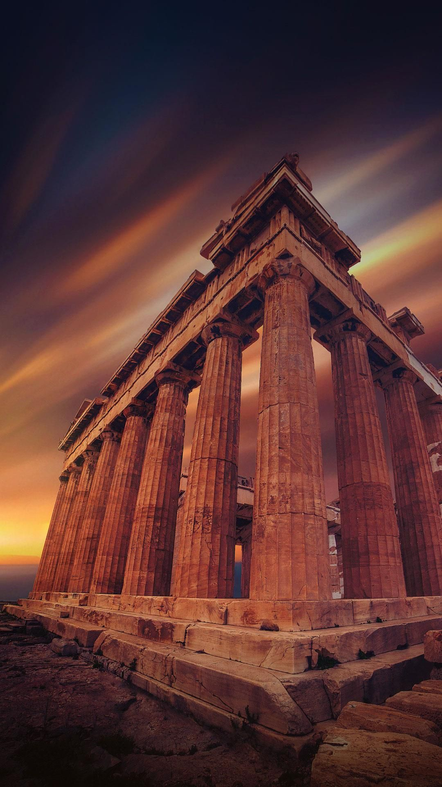
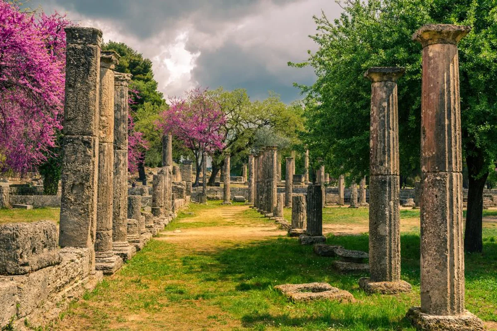
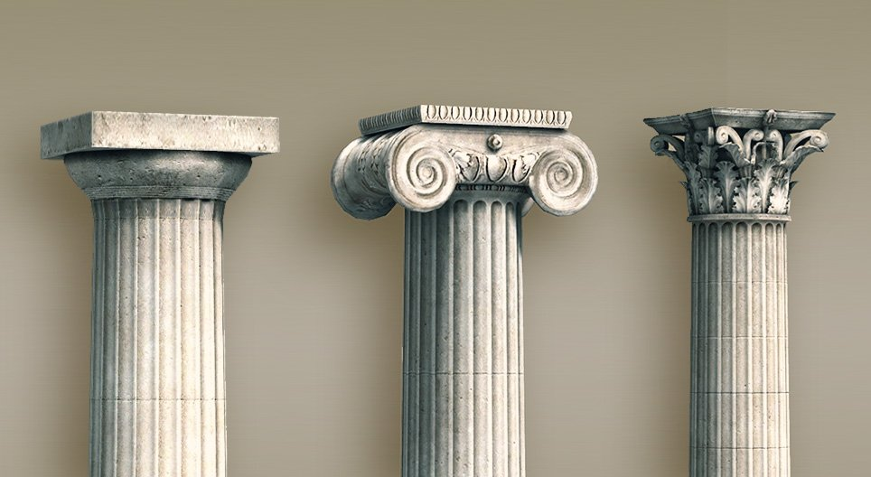

Görögország története a mai Görögország területének története. A görög történelem ezenkívül hagyományosan magában foglalja a görög nép történetét mindazokon a területeken, ahol valaha görögök éltek. A göröglakta területek kiterjedése jelentős mértékben változott a történelem során, következésképpen nagyon változó hogy mi tartozik az egyes korokban a görög történelem körébe.
A görögök ősei valamikor az i. e. 2. évezred közepén érkeztek a mai Görögország területére.A görög civilizáció a fénykorában ugyanakkor hatalmas területre terjedt ki Görögország, Egyiptom és India között. Ezt követően nagy létszámú görög kisebbség maradt a volt görög területeken (például Törökország, Itália, Líbia és a Levante), akik többnyire fokozatosan beolvadtak a helyi népek közé. A 19-20. században görög bevándorlók újabb csoportjai érkeztek a világ különböző részeire (például Észak-Amerika, Ausztrália, Észak-Európa és Dél-Afrika). A mai görögök többsége a modern Görögországban él, amely 1821 óta független állam. A másik görög lakosságú állam, Ciprus 1960 óta független.


A mai Görögország területe az ókorban. A terület ókori történelme az i. e. 3. évezredtől, a minószi civilizáció kialakulásával kezdődik és a Római Görögország időszakával fejeződik be. A korszak végét a Római Birodalom bukása jelenti (i. sz. 476).
Az ókori görög civilizáció. Amikor a hétköznapi szóhasználatban azt mondjuk, hogy "már az ókori görögök is", akkor általában az i. e. 8. századtól, a görög írásbeliség újbóli megjelenésétől a klasszikus Athén korszakán át a hellenizmusig, esetleg a római császárkor elejéig virágzó görög civilizációt értjük alatta.
Ez az ókor egész görögül beszélő világát jelenti és több mint ezer évet ölel fel. Az ókori görög civilizáció nemcsak a mai Görögország területét alkotó Peloponnészoszi-félszigetet és égei szigetvilágot foglalta magában, hanem kiterjedt a Földközi-tenger és a Fekete-tenger medencéjének nagy részére. Ide tartozott Thrácia, Ciprus, Kis-Ázsia Égei-tengeri partvidéke (abban az időben Iónia), Szicília és Dél-Itália (másképpen Magna Graecia) és az elszórt görög gyarmatok: Illüria, Gallia déli partvidéke, Ibéria, Kürenaika (a mai Líbiában), valamint a Fekete-tenger partvidéke a kaukázusi Ibéria és Taurisz partjai mentén.

Az ókori olimpiai játékok történelmi eredete a múlt ködébe vész, de számos legenda és mítosz foglalkozik vele. Az egyik Pelopszról, Olümpia királyáról, Peloponnészosz névadó hőséről szól, akinek felajánlásokat tettek a játékok során. A keresztény Alexandriai Kelemen állítása szerint az olümpiai játékok Pelopsz temetési játékai. A mítosz elmondja, hogyan győzte le Pelopsz Oinomaosz királyt, és nyerte el lánya, Hippodameia kezét Poszeidón segítségével, akinek ő, Pelopsz, korábban a fiúszeretője volt. A mítosz kapcsolódik az Atreusz házának (Atreidák) későbbi bukásához és Oidipusz szenvedéseihez


Az oszlopfők azon törvények összessége, amelyek szerint az antik görög és római építészet műveit megépítette, oly módon, hogy annak minden részlete az egésszel összhangban legyen; az egyes alkotórészeknek, azok tagozatainak arányai és formái az alkotórészek funkcióival megegyezzenek, vagyis az alkotás művészi egész legyen.
A dór oszloprend egyszerű, kissé nehézkes. Oszlopainak lába nincs, azoknak állóságot a lefelé erősen szélesedő törzs ad.
A karcsúbb, finomabb részletekkel bíró ión oszloprend egymástól pálcikákkal elválasztott 24 barázdával van tagolva
A korinthoszi oszloprend leginkább az oszlopfőben, azonkívül nyúlánkabb arányaiban tér el a jóntól.
Prométhusz egy titán aki ellopta a tüzet az istenektől és oda adta a halandóknak. Így Zeusz mérges lett rá és kiláncolta.